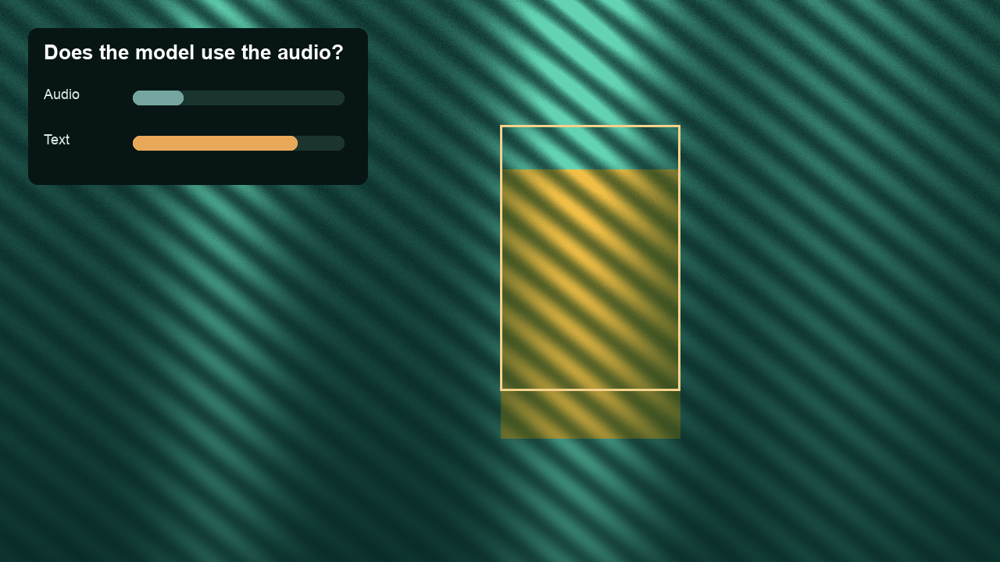
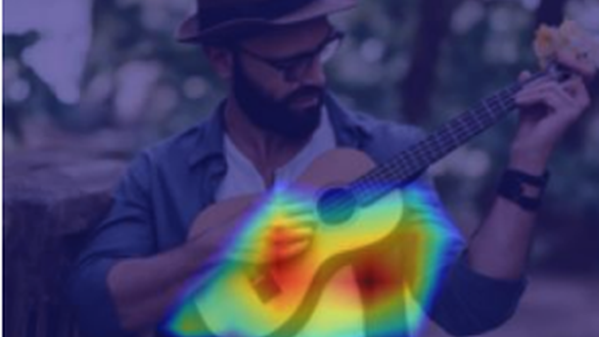
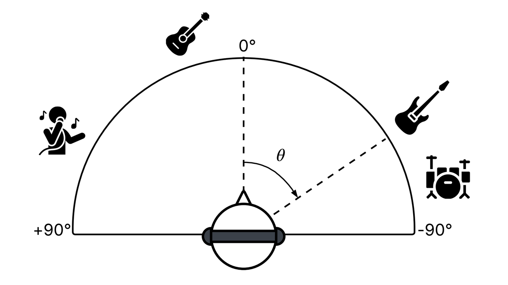
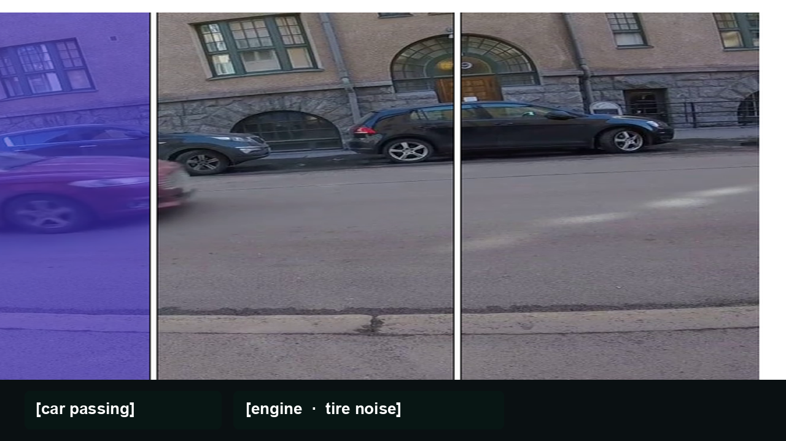

01Trustworthy and robust audio understanding
We study what audio models get right, where they fail, and how to make them more accurate, explainable, and trustworthy in the real world.
My team and I develop AI tools that help computers understand, retrieve, and create sounds. Our goal is to make these tools reliable, trustworthy, and inclusive, so they work for different people, types of music, and listening environments. Our research combines signal processing and machine learning across audio, vision, and language, with applications in music, environmental sound understanding, accessibility, and health.
Four related directions. They share methods and often show up in the same projects.

01We study what audio models get right, where they fail, and how to make them more accurate, explainable, and trustworthy in the real world.

02We connect sound and vision through localization, retrieval, and cross-modal representation learning.

03We extract musical structure, separate sources in stereo and binaural audio, learn transferable representations, and generate music from other media. A recurring concern is making these tools work for underrepresented genres and meters.

04We study how machine listening can make non-speech information accessible in online video, and how music analysis can support health and therapy, from captioning environmental sounds to tracking listening after stroke.
One recent paper per theme. I chose student-led work where I am a senior author, preferably with a public demo or a result that shows the idea rather than a dataset or software paper.

Do audio language models actually use the audio they are given, or do they lean on the text?

Visual sound source localization that learns from silence, noise, and off-screen sounds, not only from positive audio-visual pairs.

Augmenting meter-tracking models so they work for underrepresented time signatures, not only 4/4.

How non-speech sounds are captioned on YouTube, and what that means for more accessible media.
NYU Steinhardt Gabriel Carras Research Award for Promising Young Scholars.
Google Award for Inclusion Research
NYU Provost’s Postdoctoral Fellowship.
Best undergraduate thesis award, National Academy of Engineering of Uruguay.
Our work has been supported by the National Science Foundation, the National Institutes of Health, Google, Adobe, and NYU, in collaboration with colleagues at NYU and NJIT.
AI-supported audio captioning of non-speech information, with Mark Cartwright and Sooyeon Lee (NJIT).

Feasibility of a music listening intervention for mental health recovery after stroke, with Pablo Ripollés and Heidi Schambra.

Including Latin American culture in music information research.
Support for research in audio understanding.
AI-assisted tools for music therapy, and earlier work on sound captioning for accessibility.